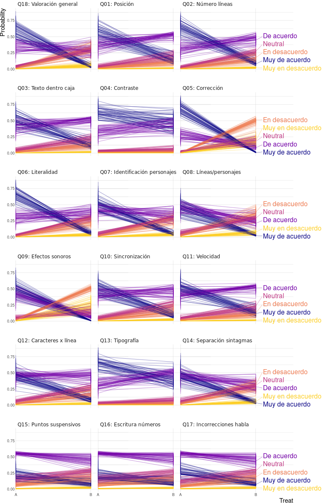
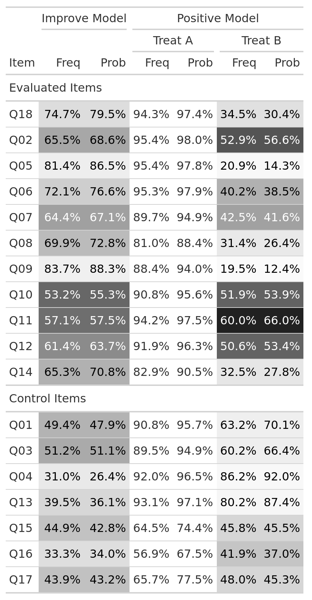

| Response | Estimate | Std. Error | z value | Pr(>|z|) |
|---|---|---|---|---|
| No sé / No contesto | 0.190 | 0.327 | 0.580 | 0.562 |
| Muy en desacuerdo | -0.135 | 1.012 | -0.134 | 0.894 |
| En desacuerdo | -0.244 | 0.291 | -0.838 | 0.402 |
| Neutral | 0.152 | 0.214 | 0.711 | 0.477 |
| De acuerdo | -0.210 | 0.134 | -1.570 | 0.116 |
| Muy de acuerdo | 0.117 | 0.137 | 0.855 | 0.393 |
5 Resultados
En el Capítulo 4 se realizó una exploración de los datos y se adecuaron los modelos presentados en el Capítulo 2 al diseño del experimento del subtitulado. En este capítulo se comentan los resultados de los modelos seleccionados siguiendo el mismo orden expositivo, comenzando por el análisis del , continuando por la y finalizando con la .
5.0.1 Comparación con Odds Ratio
El contraste de hipótesis del \(log\ OR\) del nivel subtitulado y secuencia (ver Sección 4.2.1) no produce significación estadística en ningún nivel de respuesta por lo que, según esta prueba estadística, el orden en el que se ven los vídeos no influye en la respuesta de los estudiantes (ver Tabla 5.1).
Sin embargo, si se realiza este contraste entre subtítulos y periodos, se constata la existencia de un de signo contrario para los ítems 4 y 5 (ver Tabla 5.2). El test es significativo porque el ratio entre subtítulos de respuestas con valor 4 es diferente en cada periodo habiendo mayor cantidad de respuestas 4 en el segundo periodo que en el primero. Con las respuestas 5 ocurre lo contrario: la proporción es mayor en el primer periodo. La Figura 5.1 permite una comprobación visual. Esto indica que los estudiantes de ambos grupos prestaron más atención o fueron más exigentes en el segundo visionado y valoraron relativamente peor el segundo vídeo. Que el efecto periodo sea de signo contrario en dos respuestas no debe sorprender en este diseño de experimento, ya que un test es un juego de suma cero: la valoraciones que se ganan o se pierden en un nivel de respuesta necesariamente se reparten entre el resto de niveles. En cualquier caso, el efecto periodo es cuantitativa y cualitativamente pequeño. Al afectar solo al intercambio de valoraciones entre los niveles 4 y 5, es simplemente una pequeña corrección en la valoración del subtitulado y cualitativamente es poco importante ya que las respuestas 4 y 5 son ambas valoraciones positivas.
| Response | Estimate | Std. Error | z value | Pr(>|z|) |
|---|---|---|---|---|
| No sé / No contesto | 0.335 | 0.327 | 1.022 | 0.307 |
| Muy en desacuerdo | 0.135 | 1.012 | 0.134 | 0.894 |
| En desacuerdo | -0.121 | 0.291 | -0.416 | 0.677 |
| Neutral | 0.055 | 0.214 | 0.259 | 0.796 |
| De acuerdo | -0.851 | 0.134 | -6.367 | 0.000 |
| Muy de acuerdo | 0.486 | 0.137 | 3.557 | 0.000 |

5.0.2 Modelado
5.0.2.1 Regresión Logística
En la Sección 4.2.2 se explicó una forma de crear una variable dicotómica que permite ajustar los datos a una Regresión Logística. Concretamente, se creó la variable respuesta \(Improve\) que compara si las respuestas de cada estudiante a cada Ítem entre los niveles de subtitulado (\(A\) frente \(B\)) han mejorado (valor 1) o se han mantenido o empeorado (valor 0). El modelo que se propone en esta sección no tiene en cuenta el porque resultó no significativo en el análisis y, en cambio, se incluye como efectos aleatorios los estudiantes y los ítems sobre el intercepto ya que, como se ha explicado, son variables que no se pueden considerar independientes:
Improve ~ 1 + (1 | Subject) + (1 | Item)
glmer_improve_subject_question <- glmer(
Improve ~ 1 + (1 | Subject) + (1 | Item),
family = "binomial", data = df_improve
)El resumen del modelo ajustado con la función glmer del paquete lme4 (ver Bates et al. 2015) produce los resultados de la columna izquierda de la Tabla 5.3. El intercepto del modelo ajustado es 0.465 (std.error 0.295). Por ello, la probabilidad de que se otorgue una mayor puntuación en \(A\) que en \(B\) es del 61.42%. La proporción de varianza explicada por los efectos aleatorios () es 0.534.
| Improve (A>B) | Level == 'Positivo' | |
|---|---|---|
| (Intercept) | 0.465 | 1.474*** |
| (0.295) | (0.284) | |
| Treat1 | 1.548*** | |
| (0.223) | ||
| SD (Intercept Subject) | 1.703 | 1.590 |
| SD (Treat1 Subject) | 1.082 | |
| Cor (Intercept~Treat1 Subject) | -0.093 | |
| SD (Intercept Item) | 0.931 | 0.893 |
| SD (Treat1 Item) | 0.726 | |
| Cor (Intercept~Treat1 Item) | -0.119 | |
| Num.Obs. | 1451 | 2980 |
| AIC | 1553.6 | 2390.0 |
| BIC | 1569.5 | 2438.0 |
Una forma alternativa de Regresión Logística es simplemente saber si cada respuesta es positiva (4 ó 5) frente a si es negativa o neutra (1, 2, ó 3). Como efecto fijo se incorpora el nivel de subtitulado y como efectos aleatorios el estudiante y el ítem ambos con intercepto y pendiente sobre el subtitulado variables por tener mejor valor de \(AIC\) que otros modelos probados 1. La fórmula del modelo es la siguiente:
I(Level == “Positivo”) ~ Treat + (1 + Treat | Subject) + (1 + Treat | Item)
En la columna derecha de la Tabla 5.3 se muestra el resumen del modelo. En este caso, el intercepto tiene una valor de 1.474. Por lo que la probabilidad de respuesta positiva en cualquier ítem y nivel de subtitulado es 81.4%. El coeficiente Treat1 es significativo y tiene valor 1.548 y es el valor en logits que se añade o se quita en función de si el subtitulado es el \(A\) o el \(B\). Esto se traduce en que la posibilidad de una respuesta positiva en el subtitulado \(A\) es 95.4%. En el subtitulado \(B\) esta probabilidad se reduce a 48.2%. Por último, el valor de \(ICC\) del modelo es 0.604
5.0.2.2 Regresión Ordinal
En la Sección 4.2.3 se evaluaron distintas parametrizaciones de la Regresión Ordinal Acumulativa tanto desde el punto de vista frecuentista como bayesiano, considerando únicamente efectos fijos y también efectos aleatorios. Finalmente, tanto en el análisis frecuentista como en el bayesiano, el modelo que resultó ser más parsimonioso (evaluado con y con \(AIC\)) es el de la Ecuación 4.2, que se reproduce aquí en sintaxis R:
Response ~ Treat*Period + (1 + Treat | Subject) + (1 + Treat | Item)
Este modelo incluye como efectos fijos el nivel de subtitulado (Treat), el periodo (Period) y su interacción; y como efectos aleatorios el estudiante (Subject) y el ítem (Item). Ambos con interceptos y pendientes variables por nivel de subtítulo. Los coeficientes estimados son muy similares tanto en el paradigma frecuentista como en el bayesiano. En la Tabla 5.4 se comparan las estimaciones producidas por ambos modelos. Como ya se dijo, el efecto más importante es el debido al subtitulado (coeficiente frecuentista 1.432). En comparación con él, los efectos debido al periodo y la secuencia son muy pequeños y no significativos (coeficientes 0.173 y 0.14 respectivamente). La proporción de la varianza explicada debida a efectos aleatorios (\(ICC\)) es 0.579.
En la Figura 5.2 se muestran las predicciones del modelo por nivel de subtítulo y periodo. El modelo predice para el subtitulado \(B\) el nivel 4 de respuesta como el más probable seguido del 3, mientras para el subtitulado \(A\) el nivel de respuesta más probable es el 5 seguido del 4. En el subtitulado \(B\) apenas hay diferencias entre periodos, sin embargo, en el subtitulado \(A\) hay mayor probabilidad del nivel de respuesta 5 en el periodo 1 y nivel de respuesta 4 en el periodo 2.

| Name | ordinal::clmm | brms::brm | ||||
|---|---|---|---|---|---|---|
| Est. | conf.2.5% | conf.97.5% | Est. | cred.2.5% | cred.97.5% | |
| 1|2 | -5.00 | -5.52 | -4.49 | -4.94 | -5.52 | -4.42 |
| 2|3 | -2.65 | -3.12 | -2.18 | -2.58 | -3.11 | -2.09 |
| 3|4 | -1.37 | -1.83 | -0.90 | -1.30 | -1.82 | -0.82 |
| 4|5 | 1.18 | 0.72 | 1.65 | 1.25 | 0.74 | 1.75 |
| Treat1 | 1.43 | 1.02 | 1.84 | 1.46 | 1.01 | 1.92 |
| Period1 | 0.17 | -0.09 | 0.43 | 0.17 | -0.09 | 0.44 |
| Treat1:Period1 | 0.14 | -0.18 | 0.46 | 0.14 | -0.20 | 0.47 |
| Item.sd(Intercept) | 0.70 | 0.75 | 0.53 | 1.15 | ||
| Item.sd(Treat1) | 0.68 | 0.75 | 0.53 | 1.12 | ||
| Subject.sd(Intercept) | 1.49 | 1.53 | 1.29 | 1.85 | ||
| Subject.sd(Treat1) | 1.17 | 1.21 | 1.01 | 1.45 | ||
| Item.cor(Intercept,Treat1) | -0.53 | -0.49 | -0.78 | 0.01 | ||
| Subject.cor(Intercept,Treat1) | -0.13 | -0.11 | -0.34 | 0.14 | ||
En la Figura 5.3 se representan 50 muestras de la esperanza de la distribución predictiva a posteriori para cada ítem y nivel de subtitulado marginalizados por periodo y estudiante. La primera conclusión que se puede extraer es que el modelo tiene bastante incertidumbre sobre los valores de respuesta a cada ítem no superando casi nunca el 50% de probabilidad para todos los ítems y niveles de subtitulado. En general se observa en la mayoría de los ítems del nivel de subtitulado \(A\) que los alumnos están bastante seguros de que la respuesta a los ítems debe ser 4 ó 5, asignando una muy baja probabilidad a los valores 1, 2, ó 3, pero habiendo bastante incertidumbre respecto cuál de los dos valores (4 ó 5) asignar. En el nivel de subtitulado \(B\) la situación es bastante más confusa. Aunque la opción de respuesta preferida es 4 y las menos preferidas son la 5 y la 1, hay bastante mezcla entre las opciones de respuesta 2, 3 y 4. En cuanto al análisis individualizado por ítem se llega a las siguientes conclusiones:
En los ítems \(Q04\) y \(Q13\) los estudiantes no aprecian defectos en el subtitulado ni diferencias entre un nivel y otro. Son valoradas en ambos subtitulados con puntuaciones de 4 y de 5.
En los ítems \(Q15\), \(Q16\) y \(Q17\), la opción de respuesta más probable es 4. El modelo asigna una baja probabilidad de respuesta a la opción 1 y similares al resto. La probabilidad de la opción 5 decrece ligeramente entre subtitulado \(A\) y \(B\) y lo contrario ocurre con las opciones 2 y 3.
Las muestras de los ítems \(Q01\), \(Q02\), \(Q03\), \(Q10\), \(Q11\) y \(Q12\) son similares a las anteriores. Particularmente en lo referente a que la respuesta más probable en el subtitulado \(B\) es 4. En el subtitulado \(A\) hay preferencia por 4 y 5. El nivel 5 cae acusadamente en el subtitulado \(B\) y en este nivel aumenta ligeramente la probabilidad de respuesta 2 y 3.
Los ítems \(Q06\), \(Q07\), \(Q14\) y \(Q18\) tampoco son muy diferentes de los anteriores. En general el modelo predice mayor probabilidad de respuesta para 5 en el subtitulado \(A\) pero este valor es con alta probabilidad cercano a cero en el subtitulado \(B\). En el subtitulado \(B\) la probabilidad de respuesta 2, 3 ó 4 es similar.
Los ítems \(Q05\), \(Q08\) y \(Q09\) son los que más diferencias entre subtitulados presentan. La respuesta más probable en el subtitulado \(A\) es 5 (en \(Q08\) y en \(Q09\) muy parecida a 4). Por contra, en el subtitulado \(B\) las respuestas 4 y 5 tienden a cero, siendo la más probable la respuesta 2. En los ítems \(Q05\) y \(Q09\) la segunda respuesta más probable al subtitulado \(B\) es 1 y 4 en el ítem \(Q08\).
En definitiva, el modelo predice que los estudiantes están bastante de acuerdo en que en los ítems \(Q05\) y \(Q09\) hay una diferencia de calidad importante entre subtitulados. También están de acuerdo en que en los ítems \(Q04\) y \(Q13\) no hay apenas cambio entre los subtitulados. En los ítems \(Q15\), \(Q16\) y \(Q17\) hay una gran confusión en ambos niveles de subtitulado predominando la respuesta 4 y siendo muy parecidas las respuestas en ambos niveles. En el resto la confusión se circunscribe al nivel de subtitulado \(B\), ya que en el nivel \(A\) las opciones 4 y 5 predominan.

6 Discusión
En este capítulo se discuten los resultados una vez “descubierto el ciego” y se responde a la pregunta de investigación y a los objetivos específicos planteados en la Sección 1.2. Las respuestas a estas preguntas llevan a concluir que se ha cumplido el objetivo principal del estudio: los estudiantes del curso MOOC son capaces de evaluar las diferencias en la calidad del subtitulado de dos vídeos. Se discuten también las limitaciones del estudio y posibles mejoras al mismo.
Una vez realizado el análisis estadístico y obtenidos los resultados (ver Capítulo 5) se reveló que el subtitulado que en este trabajo se ha denominado \(A\) se corresponde con el vídeo correctamente subtitulado. Adicionalmente se ha suministrado un documento que contiene los errores introducidos en el subtitulado \(B\). A partir del mismo, se ha elaborado la Tabla \(\ref{tbl-blind-errors}\) en la que se muestra la correspondencia de cada error con los ítems de la a la que respondieron los estudiantes (ver en la Tabla 3.1 una descripción textual de cada ítem). Para 7 de los 18 ítems (Q01, Q03, Q04, Q13, Q15, Q16, Q17) no se ha encontrado una adscripción clara en el documento de errores y, por lo tanto, esos ítems sirven de control del test y sería esperable que en ellos las respuestas de los estudiantes fueran similares en ambos subtitulados.
6.1 Respuestas a las preguntas de investigación y a los objetivos específicos
Para responder a las preguntas de investigación se van a utilizar los hallazgos del Análisis Exploratorio (ver Sección 4.1) y los resultados de los tres modelos comentados en el Capítulo 5:
- con variable respuesta
Improve, que calcula la probabilidad de que la respuesta a un ítem mejore entre subtitulados \(A\) > \(B\) (ver Sección 5.0.2.1). - con variable respuesta
Positive, que calcula la probabilidad de que la respuesta a un ítem sea positiva (4 ó 5). - con variable Respuesta
Response, que calcula la probabilidad de cada nivel de respuesta (ver Sección 5.0.2.2).
Para mayor comodidad del lector se vuelven a plantear aquí la pregunta de investigación y los objetivos específicos:
Pregunta de investigación
¿Son los estudiantes de un curso de creación de materiales accesibles capaces de evaluar las diferencias en la calidad del subtitulado de un vídeo?
El subtitulado \(A\), que es el correcto, ha sido mejor evaluado por los estudiantes. Esto se ha constatado tanto en la exploración inicial como en cada uno de los tres modelos propuestos. Por ejemplo, en la exploración inicial se vio que la respuesta más frecuente en el subtitulado \(A\) es 5 y en el \(B\) es 4 y en el modelo con variable respuesta Improve predice que la probabilidad de que se otorgue una mayor puntuación en \(A\) que en \(B\) es 61.42%. Por lo tanto, se concluye respondiendo afirmativamente a la pregunta: los estudiantes del curso han sabido evaluar las diferencias en el subtitulado de los vídeos.
Objetivo específico
¿En qué pautas de subtitulado los estudiantes tienen mayor facilidad para reconocer diferencias entre un subtitulado correcto y otro incorrecto?
La respuesta a esta pregunta requiere un análisis pormenorizado ítem a ítem. Se ha elaborado una tabla para los dos modelos logísticos y otra para el modelo de Regresión Ordinal. La Figura 6.1 contiene la tabla de los dos modelos logísticos. Para su correcta interpretación se deben tener en cuenta las siguientes premisas:
- En la parte izquierda se presentan los resultados del modelo logístico con variable respuesta
Improvey en la derecha el modelo logístico con variable respuestaPositive. - En la parte superior se presentan los ítems en los que hay diferencias en el subtitulado y que son objeto de este objetivo específico. En la parte inferior se muestran los ítems que se usan como control ya que no hay diferencias en ellos entre subtitulados y se analizan en el objetivo correspondiente.
- La columna
Freqes la frecuencia relativa de las tablas de contingencia que resultan del análisis exploratorio. La columnaProbson las probabilidades predichas por cada uno de los modelos. - Los datos se muestran con un fondo coloreado con una tonalidad más oscura cuando más inesperado sea el resultado obtenido.
En el modelo con variable respuesta Improve (ver parte izquierda de Figura 6.1), los alumnos han valorado claramente de forma superior el subtitulado \(A\) que el \(B\) en los ítems \(Q05\) (la corrección ortográfica y gramatical), \(Q06\) (la literalidad), \(Q08\) (la asignación de líneas a los personajes en los diálogos), \(Q09\) (la descripción de efectos sonoros) y \(Q14\) (la separación en líneas diferentes de sintagmas nominales, verbales y preposicionales).
En la parte derecha de la Figura 6.1 se muestran las predicciones del modelo con variable respuesta Positive de obtener una respuesta con nivel 4 ó 5. Coincide con el modelo anterior en los ítems peor valorados en el subtitulado \(B\). Además, habría que añadir el ítem \(Q07\) (la identificación de los personajes), que tiene mayor probabilidad de valoración no positiva.

En la Figura \(\ref{fig-prob-compare}\) se muestran las probabilidades por nivel de respuesta, ítem y nivel de subtitulado correspondiente al modelo de Regresión Ordinal y se comparan con las frecuencias de la tabla de contingencia. Los ítems con errores se presentan en negrita y recuadrados. Se observa que en el subtitulado \(A\) todas las respuestas a los ítems se concentran en valores positivos (4 ó 5). En el subtitulado \(B\) se espera que los ítems en los que se han introducido errores tengan peores valoraciones. Esto sucede claramente en \(Q05\) y en \(Q09\) y también aunque en menor medida en \(Q06\), \(Q07\), \(Q08\) y \(Q14\). Estos ítems coinciden con los que se han destacado anteriormente y son, por lo tanto, en los que los estudiantes reconocen más fácilmente diferencias entre subtitulados.
Objetivo específico
¿En qué pautas de subtitulado los estudiantes tienen mayor dificultad para reconocer diferencias entre un subtitulado correcto y otro incorrecto?
Los dos modelos logísticos (ver Figura 6.1) coinciden en que los estudiantes tienen dificultad para reconocer diferencias en el subtitulado en los ítems:
- \(Q02\) (el número de líneas por subtítulo) con probabilidad predicha de mejorar la valoración de 68.56%.
- \(Q10\) (la sincronización de las entradas y salidas de los subtítulos) con probabilidad de mejora 55.34%.
- \(Q11\) (la velocidad de exposición de los subtítulos) con probabilidad 57.53%.
- \(Q12\) (el máximo número de caracteres por línea) con probabilidad 63.7%.
En estos mismos ítems, el modelo ordinal (ver Figura \(\ref{fig-prob-compare}\)) predice más respuestas negativas en el subtitulado \(B\) que en el \(A\) pero aún así el subtitulado \(B\) tiene un alto número de respuestas positivas.
Para entender las motivaciones de las valoraciones de los alumnos, se han analizado los comentarios que dejaron 2. La siguiente es una selección de los comentarios más relevantes en cada ítem:
- \(Q02\), el número de líneas por subtítulo: En los comentarios al subtitulado \(A\) hay bastantes que se quejan del número excesivo de líneas.
Subtitulado \(A\): ‘Se pueden hasta 3 pero no es recomendable’, ‘en ocasiones son 3 innecesariamente’, ‘frases muy cortas’, ‘No superaba las dos (creo recordar)’, ‘Se cumple’.
- \(Q10\), la sincronización de las entradas y salidas de los subtítulos: En los comentarios al subtitulado \(A\) hay algunos que dicen que hay falta de sincronización y, por el contrario, en el \(B\) que estaban bien sincronizados. Hay por tanto una falta de atención de algunos estudiantes para evaluar este aspecto del subtitulado.
Subtitulado \(A\): ‘Van a destiempo’, ‘a veces hay retardo del texto sobre el audio’, ‘No me dado cuenta.’, ‘Estaban desincronizadas’.
Subtitulado \(B\): ‘Regular.’, ‘Sincronizado’, ‘bastante sincronizados’, ‘va a la paz texto y lenguaje’, ‘Estaba bien sincronizado’, ‘Fallos corregidos’, ‘sincronizadas con el audio y la imagen’.
- \(Q11\), la velocidad de exposición de los subtítulos: Los comentarios al subtitulado \(B\) indican que muchos estudiantes no han tenido en cuenta que el subtítulo debe permanecer al menos tres segundos en la pantalla.
Subtitulado \(B\): ‘Sincronizado.’, ‘me ha parecido un tiempo suficiente’, ‘los pude leer bien’, ‘Buen tiempo para la lectura’, ‘Se corresponde con los 12 caracteres por segundo’, ‘velocidad apropiada’, ‘Velocidad adequada para una buena lectura’.
- \(Q12\), el máximo número de caracteres por línea: Los comentarios denotan que en general los alumnos conocen el número máximo de caracteres por línea, pero que no se han detenido a medir cuántos hay realmente.
Subtitulado \(A\): ‘No sobrepasa los 40 caracteres’.
Subtitulado \(B\): ‘No pasa de 37’, ‘Se encuentran entre 12 y 37’.
Se aprecia que los alumnos tienen dificultades para valorar las diferencias en la calidad del subtitulado en estos aspectos principalmente porque, aunque conozcan las normas de subtitulado, no han comprobado que se estén cumpliendo en los vídeos de la actividad.
Objetivo específico
¿Son los estudiantes capaces de valorar de forma similar los aspectos del subtitulado que no cambian en los vídeos?
Los ítems en los que no se han introducido errores deberían ser valorados de forma similar por los estudiantes. En los modelos logísticos las probabilidades y frecuencias de estos ítems se muestran en la parte inferior de la tabla de la Figura 6.1 y en el modelo ordinal son las filas no resaltadas de la tabla de la Figura \(\ref{fig-prob-compare}\). Se comprueba que los ítems \(Q04\) (el contraste entre los caracteres y el fondo) y \(Q13\) (la legibilidad de la tipografía) se valoran, como se esperaba, de forma positiva y similar en ambos subtitulados. Los ítems \(Q01\) (la posición de los subtítulos) y \(Q03\) (la disposición del texto respecto a la caja donde se muestran los subtítulos) se valoran positivamente en el subtitulado \(A\), pero en el subtitulado \(B\) hay una polarización de las valoraciones habiendo muchas positivas y negativas y pocas neutras. Por último, los ítems \(Q15\) (la utilización de puntos suspensivos), \(Q16\) (la escritura de los números) y \(Q17\) (las incorrecciones en el habla) tienen una valoración comparativamente inferior al resto de ítems en el subtitulado \(A\). Esta valoración es incluso inferior en el subtitulado \(B\). Los estudiantes que han realizado comentarios en estos ítems indican que ninguno de ellos es aplicable a los vídeos. Ante esta circunstancia, los alumnos han consignado distintas valoraciones: algunos han contestado “No sé / No contesto”, otros han consignado valoraciones neutrales y, finalmente, otros han optado por valoraciones positivas y negativas.
Objetivo específico
Efecto secuencia: ¿El orden en el que vieron los vídeos los estudiantes influye en la calidad del subtitulado percibida?
Objetivo específico
Efecto periodo: ¿La evaluación del subtitulado del segundo vídeo visto está influida por haber evaluado un vídeo previamente?
Estos objetivos se responden de forma conjunta por estar ambos efectos relacionados ya que, como se ha explicado, el efecto secuencia en un estudio cruzado \(AB/BA\) es la interacción entre el tratamiento y el periodo.
En el modelo ordinal Response ~ Treat * Period (ver Sección 4.2.3.3) se constató que tanto el periodo como la secuencia son significativos. No obstante, estos efectos son mucho menos importantes que los debidos al subtitulado. Al introducir como variables explicativas el estudiante y el ítem (ver Sección 4.2.4) tanto el periodo como la secuencia pasan a ser no significativos. En la Sección 5.0.1 se comprobó que estos efectos se producen porque la proporción de respuestas de nivel 5 en el subtitulado \(A\) sobre el \(B\) es superior en el primer periodo que en el segundo y lo contrario ocurre con las de nivel 4. Se concluye que ni el efecto secuencia ni el efecto periodo son importantes al no tener significación estadística.
6.2 Limitaciones del estudio
Aunque el estudio ha permitido responder a la pregunta de investigación, tiene una serie de limitaciones cuya eliminación permitiría ampliar su ámbito:
- Los datos proceden de un MOOC y la actividad fue voluntaria. Hay que suponer que solo los estudiantes más altamente motivados habrán participado en ella.
- El diseño cruzado no requirió un tiempo de lavado (tiempo entre tratamientos) como es habitual en este tipo de diseños. A pesar de que se ha descartado que el efecto periodo o el efecto secuencia hayan tenido una influencia importante en las respuestas a los test, sería interesante controlar el tiempo entre test y asegurar que los participantes han visto ambos vídeos e incluso que, cuando contestan al test, revisan el vídeo en lugar de fiarse de su memoria.
- En el Análisis Exploratorio (ver Sección 4.1) se constató que algunos estudiantes emplearon muy poco tiempo en responder a la actividad y que algunos estudiantes responden siempre con el mismo nivel de respuesta. Sería interesante realizar el estudio eliminando los test de calidad dudosa, para lo cual se debería contar con una muestra mayor.
- Sería interesante comprobar si las respuestas son diferentes si el estudiante dispone del test antes de ver el vídeo.
- En los comentarios de los alumnos se reflejan la existencia de problemas en el subtitulado \(B\) del ítem \(Q01\) (la posición de los subtítulos) y en subtitulado \(A\) del ítem \(Q03\) (la disposición del texto respecto a la caja donde se muestran los subtítulos). En estos ítems no debería haber deficiencias de subtitulado. Sería conveniente que un experto en subtitulado evaluara si realmente los subtítulos son correctos en estos aspectos o si es que no han sido evaluados adecuadamente por los estudiantes.
- Se ha constatado, a través de los comentarios de los alumnos, que no utilizan criterios homogéneos cuando un ítem no es aplicable a los vídeos. Algunos alumnos contestan “No sé / No contesto”, como es esperable, pero otros contestan “Neutral” y otros lo hacen negativa o positivamente. Sería deseable dar una información previa a los alumnos de cómo contestar al test.
- Igualmente se ha constatado que los estudiantes tienden a dar puntuaciones más negativas a los ítems cuando saben que se trata del vídeo incorrectamente subtitulado incluso en aquellos ítems en que los vídeos son idénticos.
- Hay ítems, como los relacionados con la tipografía, la posición de los subtítulos o el contraste, en los que al ser los vídeos idénticos, no es posible saber si los estudiantes son capaces de reconocer diferencias en la calidad del subtitulado.
- Sería interesante comparar las respuestas de los estudiantes con las realizadas por un grupo de expertos.
7 Conclusión y trabajo futuro
Este trabajo ha pretendido responder a la pregunta de investigación de si los estudiantes de un curso de son capaces de identificar los errores en el subtitulado de un vídeo, y como objetivos específicos averiguar qué aspectos del subtitulado han sido más fácilmente reconocidos por los estudiantes y en cuáles han tenido más dificultad. Para ello se ha partido de una Exploración Inicial (ver Sección 4.1) y se han propuesto varios modelos estadísticos que tengan en cuenta la naturaleza ordinal y dependiente de la variable respuesta (ver Sección 4.2). Como variables explicativas se ha considerado el nivel de subtitulado, el periodo en el que se ha realizado cada test, la secuencia u orden de realización de los test, el estudiante que ha realizado el test y el ítem al que se responde.
La conclusión más importante es que todos los análisis estadísticos realizados muestran que el nivel de subtitulado es la variable que mejor explica la respuesta a cada ítem. Los efectos secuencia y periodo son comparativamente de poca importancia y se traducen en que en general los estudiantes valoran peor el vídeo visto en el segundo periodo para un mismo nivel de subtitulado. Las variables estudiante e ítem se han tratado como efectos aleatorios por haber considerado que sus observaciones no son independientes. La varianza explicada por la variable estudiante ha sido más grande que la explicada por la variable ítem.
Los estudiantes han identificado errores de subtitulado de los ítems \(Q05\) (la corrección ortográfica y gramatical), \(Q06\) (la literalidad), \(Q07\) (la identificación de los personajes), \(Q08\) (la asignación de líneas a los personajes en los diálogos), \(Q09\) (la descripción de efectos sonoros) y \(Q14\) (la separación en líneas diferentes de sintagmas nominales, verbales y preposicionales).
Sin embargo, han tenido más dificultades en identificar los errores introducidos en los ítems \(Q02\) (el número de líneas por subtítulo), \(Q10\) (la sincronización de las entradas y salidas de los subtítulos), \(Q11\) (la velocidad de exposición de los subtítulos) y \(Q12\) (el máximo número de caracteres por línea). El análisis realizado sobre los comentarios a estos ítems, evidencia que los estudiantes han aprendido las normas que debe regir el subtitulado en estos aspectos pero que no han evaluado minuciosamente si se cumplen realmente. Hay que tener en consideración que esta fue una actividad voluntaria sin incidencia en la calificación del curso, y que en una situación real esto probablemente no habría sucedido ya que habrían realizado una comprobación minuciosa.
En definitiva, los estudiantes conocen las normas de subtitulado y son capaces identificar los errores que no requieren una comprobación exhaustiva. En los que sí lo requieren, que son aquellos que tienen que ver con parámetros temporales (velocidad y sincronización) y espaciales (número de líneas y caracteres por línea), han tenido más dificultad. Esto está en consonancia con Khafik y Pratama (2022). En su estudio analizan el subtitulado en inglés producido por estudiantes cuya lengua nativa no es el inglés y concluyen que los errores más frecuentes son precisamente los que tienen que ver con parámetros temporales y espaciales.
En cuanto a los ítems que tratan aspectos en los que no hay errores en ninguno de los vídeos, los estudiantes han valorado positivamente ambos subtitulados en los ítems \(Q04\) (el contraste entre los caracteres y el fondo) y \(Q13\) (la legibilidad de la tipografía). Esto no implica necesariamente que, de haber habido deficiencias en estos aspectos, las hubieran reconocido. De hecho, hay evidencias de que los estudiantes noveles tienen dificultades en la identificación de deficiencias en el contraste (ver Molanes-López et al. 2021).
Los ítems \(Q15\) (la utilización de puntos suspensivos), \(Q16\) (la escritura de los números) y \(Q17\) (las incorrecciones en el habla) preguntan cuestiones que no se producen en los vídeos y que son relativamente fáciles de verificar. En las respuestas de los estudiantes han confluido varios problemas verificables a través de los comentarios a los ítems. Por un lado, algunos estudiantes manifiestan que no recuerdan con seguridad la existencia de lo preguntado (puntos suspensivos, números, …). Este problema no es importante ya que es de suponer que en una situación de evaluación de subtitulado real realizarían un segundo visionado de los vídeos para asegurarse. Más preocupante resulta el segundo de los problemas detectados ya que podría estar también presente en otros ítems y haber pasado inadvertido en este trabajo. El problema en cuestión es que en estos ítems la respuesta esperable es “No sé / No contesto”. En la Tabla 4.6 se constató que estos son los ítems que más respuestas de este nivel reciben pero que esta respuesta no es masiva. Muchos estudiantes se decantan por valoraciones negativas, positivas o neutrales a pesar de haber indicado en los comentarios que la pregunta realizada no tiene aplicación en la actividad. Este problema es una preocupación general en análisis de escalas de Likert. Por ejemplo, ver Tutz (2020) para una propuesta de modelado estadístico de la categoría neutral en una escala de Likert. Un tercer problema detectado en estos ítems, que es probable que también haya tenido incidencia en otros ítems, es que, a pesar de que los comentarios revelan que los estudiantes piensan que estos ítems no tienen aplicación en ninguno de los vídeos, obtienen peor valoración en el subtitulado \(B\) que en el \(A\). Esto estaría indicando que las contestaciones de los estudiantes sufren cierto “efecto de ventana rota”. La hipótesis que aquí se plantea para explicar por qué el subtitulado \(B\) ha obtenido peores respuestas que el \(A\) incluso en ítems en los que el estudiante sabe que los subtitulados son idénticos es la siguiente: Hay ítems como \(Q05\) (la corrección ortográfica y gramatical) que son fáciles de evaluar y responder por los estudiantes. Si el estudiante encuentra una falta de ortografía en un subtitulado, estaría psicológicamente condicionado a ser más crítico con cualquier otro aspecto del subtitulado. Ante una pregunta que el estudiante no recuerda haber encontrado (por ejemplo, la presencia de puntos suspensivos) tiende a otorgar una valoración inferior en el subtitulado con faltas de ortografía porque considera que existe la posibilidad de haber pasado por alto la presencia de puntos suspensivos. Esto no sucede en todos los casos. Por ejemplo, en la pregunta sobre el contraste (ítem \(Q04\)), la diferencia entre subtitulados aunque existe es menor. La hipótesis expuesta es coherente con este hecho ya que, mientras que los puntos suspensivos son algo puntual cuya existencia el estudiante sabe que puede pasar inadvertida, el contraste es algo que afecta o puede afectar a todo el subtitulado del vídeo.
Estas conclusiones abren varias vías de investigación que se enumeran aquí a modo de propuesta y sin ánimo de exhaustividad:
- Incorporar al modelo variables como el sexo, la edad, el lugar de nacimiento, el nivel de estudios o el grado de conocimientos de accesibilidad previo. En el momento de realizar este trabajo se disponía de esta información aunque de forma muy incompleta ya que la mayoría de los estudiantes participantes no suministraron la información personal.
- Volver a realizar el análisis completo con los mismos datos pero incorporando desde el principio el conocimiento del subtitulado correcto y siendo más crítico con la calidad de los datos, lo que llevaría a eliminar alguno de los cuestionarios.
- Analizar los datos de la edición del curso de 2023 para ver en qué medida los modelos y las conclusiones se mantienen o cambian.
- Plantear mejoras en la recogida de datos como, por ejemplo, indicaciones detalladas de como responder en caso de duda, desconocimiento, inaplicabilidad, ….
- Sería interesante ver como cambian las respuestas de los estudiantes si en ambos vídeos se introducen errores en el subtitulado en diferentes aspectos.
- Añadir errores de subtitulado para todos o casi todos los ítems.
- Además de las respuestas de los estudiantes, se podría plantear la actividad a profesionales del subtitulado para evaluar las semejanzas y diferencias entre grupos.